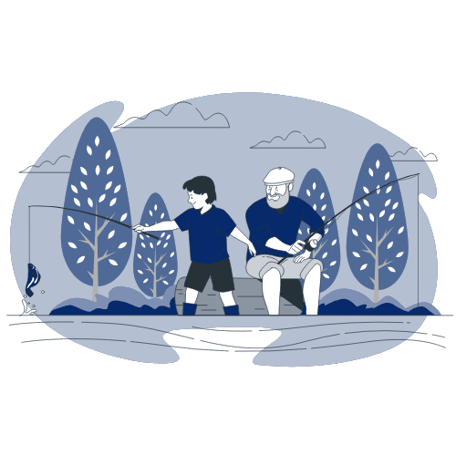
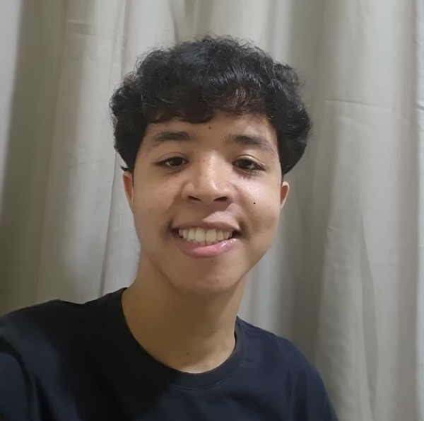
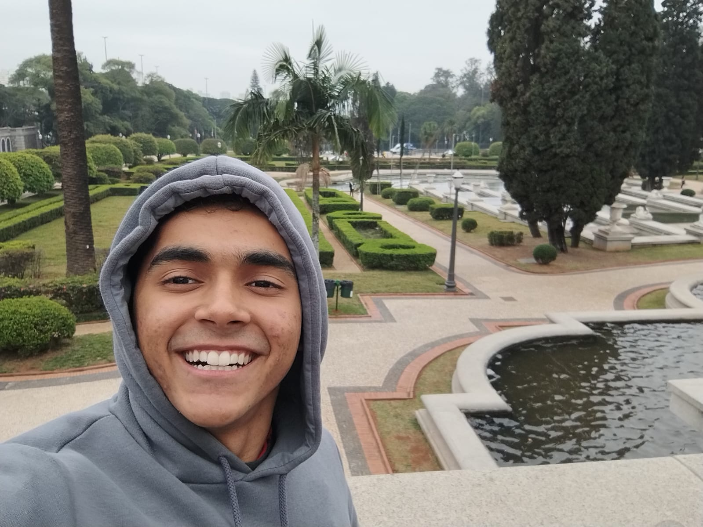
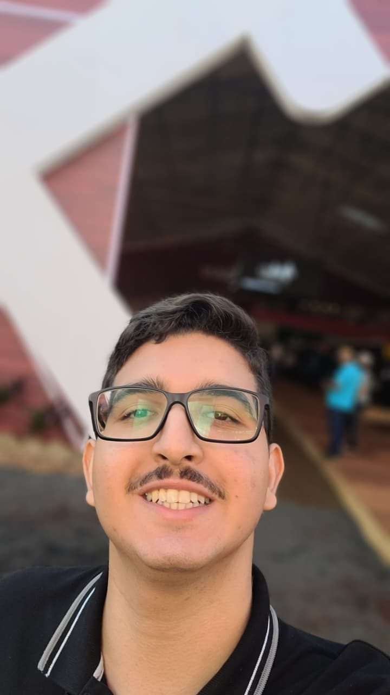
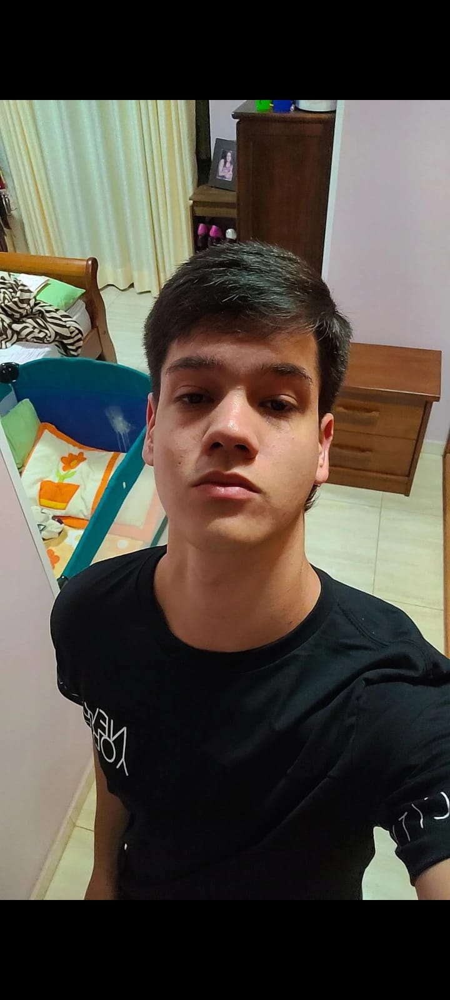
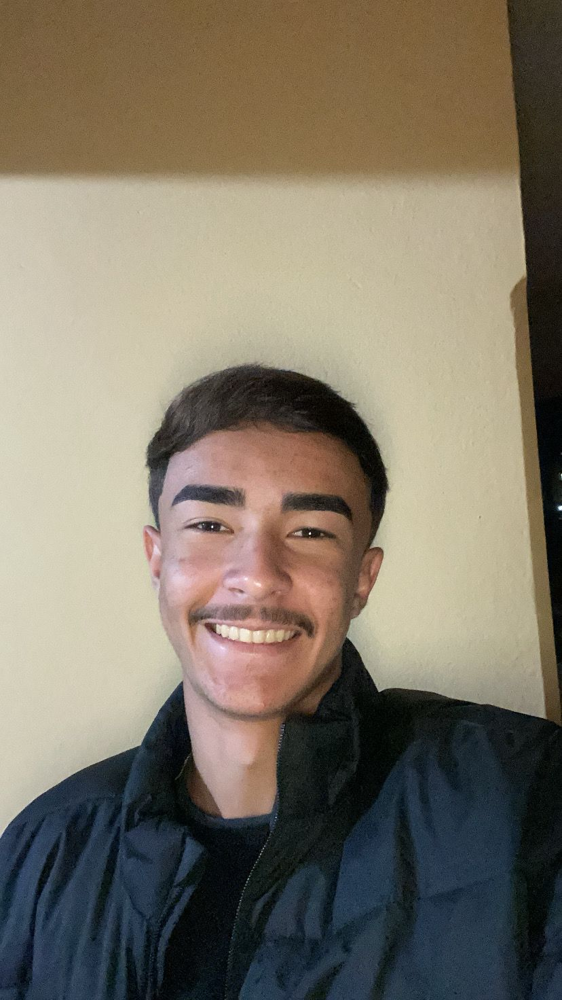
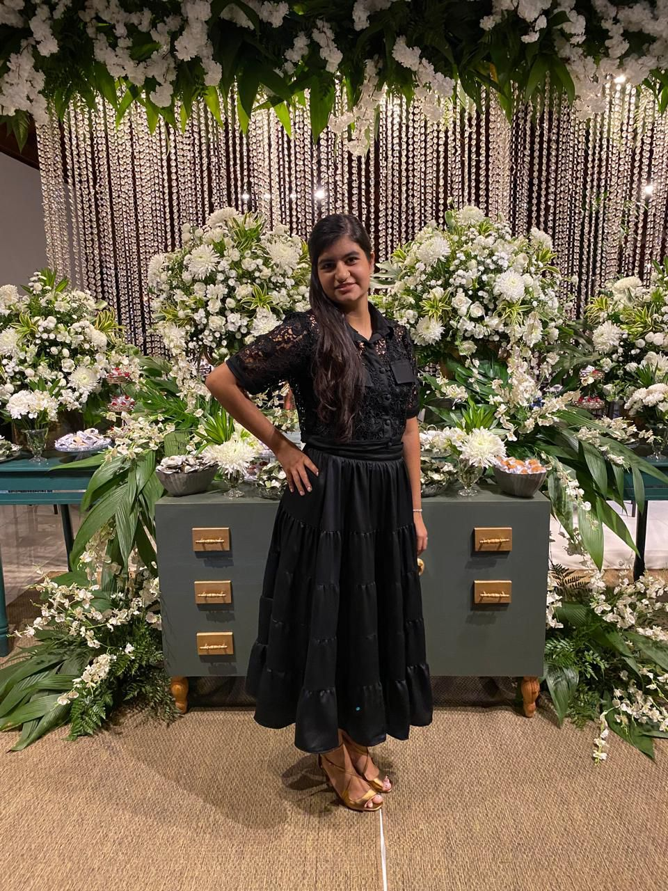

A plataforma perfeita para compartilhar experiências, fazer amizades e encontrar os melhores rios e lagos para sua pescaria.

Tudo que você precisa para ter a melhor experiência de pesca
Conheça novos pescadores, compartilhe experiências e construa uma comunidade apaixonada pela pesca.
Encontre os melhores rios e lagos com avaliações e recomendações de pescadores experientes.
Leia e compartilhe avaliações detalhadas sobre locais de pesca, ajudando toda a comunidade.
Nossa plataforma nasceu da necessidade de conectar pescadores e facilitar a descoberta de locais agradáveis e acessíveis para a pesca.
Funcionamos como uma rede social especializada, onde pescadores podem trocar informações, experiências e feedback sobre os melhores ambientes para pescar.
Promovemos a pesca sustentável, impulsionando a economia local e proporcionando momentos de lazer e trabalho em harmonia com a natureza.

Desenvolvedor Full-Stack em Formação
Estou cursando Desenvolvimento de Software Multiplataforma na FATEC. Sou Full-Stack em formação (Dart, JavaScript, React e C#). Combino design centrado no usuário com habilidade para organizar, planejar e coordenar projetos em equipe.

Desenvolvedor Front-End | Co-Fundador
Tenho 19 anos e sou desenvolvedor front-end, iniciando no back-end. No Pesque & Fale organizo os papéis da equipe e oriento meus parceiros, valorizando o trabalho em equipe e o impacto positivo da iniciativa.

Desenvolvedor Front-End | Co-Fundador
Tenho 18 anos, sou desenvolvedor front-end e cofundador do Pesque & Fale. Criei a plataforma para incentivar a pesca em Matão-SP, organizando informações e promovendo inovação na área socioeconômica do lazer local.

Desenvolvedor Front-End | Co-Fundador
Tenho 18 anos e sou desenvolvedor front-end. Sou cofundador do Pesque & Fale, um projeto que inova no mundo da pesca em Matão. Busco unir criatividade e tecnologia para gerar impacto positivo na comunidade.

Desenvolvedor Front-End | Cofundador
Tenho 18 anos e atuo como desenvolvedor front-end, sempre buscando criar experiências digitais funcionais e atrativas. Sou um dos idealizadores do projeto Pesque & Fale, trazendo inovação ao universo da pesca em Matão.

Estudante de Desenvolvimento de Software
Tenho 18 anos e estudo na Fatec Matão. Sou aluna do curso de Desenvolvimento de Software Multiplataforma e atualmente estou no segundo semestre.
Junte-se à comunidade PESQUE & FALE hoje mesmo
Cadastre-se Gratuitamente